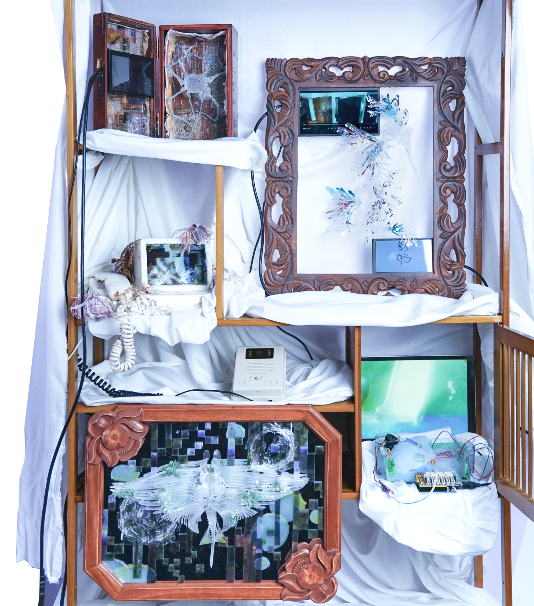

01 / Interactive Media
Abyssal
Relics

Abyssal Relics
Installation View / 2025
01 / Introduction
Abyssal
Relics
Abyssal Relics is an interactive installation that presents a speculative collection of objects, images, screens, and fabricated artifacts through the visual language of an archival cabinet.
Project
Abyssal Relics
Format
Interactive Installation
Year
2025
02 / Documentation
Installation
Film
Installation documentation
Abyssal Relics · 2025
Abyssal Relics
Installation Film / 2025
Continue